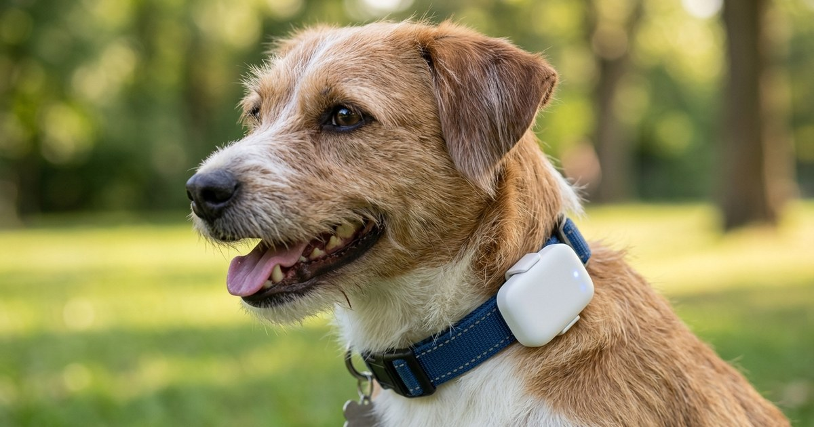
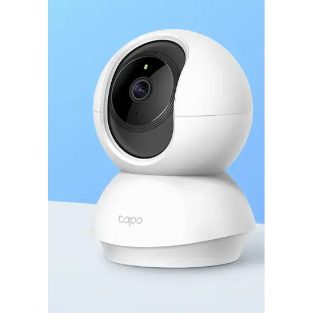
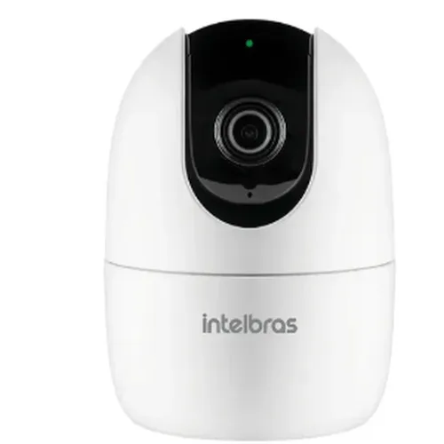
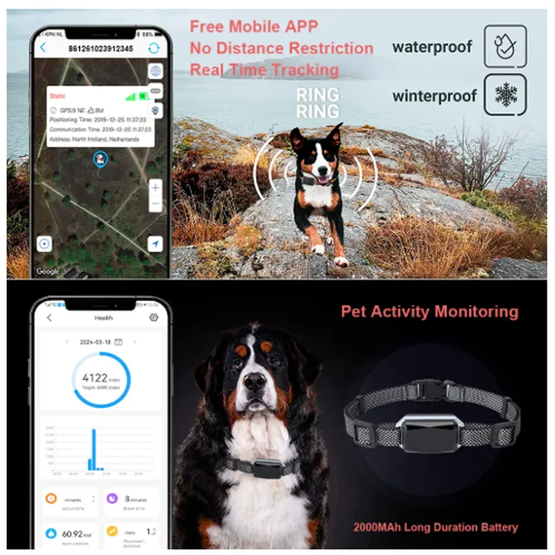

TP-Link Tapo C210 2K: mais detalhe na imagem
A mesma câmera em 2K (3 MP), melhor para dar zoom e ver se o pet comeu. Aceita cartão de até 512 GB e alerta quando detecta choro. Nota 4,9 em 7.890 avaliações.
R$ 142,42 no Pix Ver preço

Câmera pet e coleira GPS resolvem problemas diferentes. A câmera fica dentro de casa e mostra o que o pet faz sozinho: se late, destrói, come ou fica ansioso. A coleira GPS vai no pescoço do cão e mostra no mapa onde ele está quando foge ou se perde. Se o seu medo é a fuga, escolha a coleira; para a rotina em casa, a câmera. Para os dois, o par mais barato desta página, Tapo C200 e coleira com tag Apple, custa cerca de R$ 234 no Mercado Livre. E a "coleira com câmera" que aparece nas buscas é um terceiro produto: grava o passeio, mas não localiza o cão.
Cão que foge? The Pet GPS 4G: rastreamento em tempo real, com chip e 1 ano de dados inclusos.Link de afiliado — sem custo extra para você.
Ver preço no Mercado Livre →Escolha rápida pelo problema
- O cão foge ou se perde no passeio: coleira GPS, como a The Pet GPS 4G (R$ 718, 1 ano de dados incluso) ou o ANXK G58 (R$ 217,99, mais o chip)
- Fugas curtas na cidade, com iPhone e pouco dinheiro: coleira com tag Apple (R$ 123,38, sem mensalidade, não é GPS)
- Quero ver o que ele faz sozinho em casa: câmera, como a Tapo C200 (R$ 111 no Pix)
- Quero que a câmera siga o pet sozinha: Intelbras iM4 C (R$ 186,75 no Pix)
- Quero filmar o passeio do ponto de vista do cão: coleira com câmera ou peitoral para GoPro (grava, não localiza)
- O cão foge e também fica muitas horas sozinho: os dois; veja os pares por orçamento
A câmera pet é uma câmera Wi-Fi fixa num cômodo. Você abre o app e vê o pet ao vivo, fala com ele pelo alto-falante e recebe alerta quando há movimento. Ela não sai de casa: se o cão pula o muro, ele some do quadro.
A coleira GPS é um rastreador preso à coleira. Ela calcula a posição do cão por satélite e envia ao app pela rede 4G, então funciona a qualquer distância onde houver sinal. Não tem câmera nem microfone: você vê um ponto no mapa, não o cão. As tags Bluetooth, como a da coleira com tag Apple, também entram nessa família, mas dependem de celulares de outras pessoas passando perto do cão. Entenda a diferença em coleira GPS Bluetooth x chip de operadora.
| Critério | Câmera pet | Coleira GPS 4G | Coleira com câmera |
|---|---|---|---|
| Onde funciona | Dentro de casa, no alcance da lente e do Wi-Fi | Dentro e fora de casa, onde houver sinal 4G | Onde o cão estiver |
| O que você vê | Imagem ao vivo, com som | Ponto no mapa, trajeto e alertas | Vídeo gravado, depois do passeio |
| Ajuda a achar o cão que fugiu | Não | Sim | Não |
| Ajuda com ansiedade e comportamento | Sim: você vê o que acontece e fala com o pet | Não | Pouco |
| Interação a distância | Voz; petisco nos modelos com dispensador | Alarme sonoro em alguns modelos | Não |
| Energia | Na tomada | Bateria de dias, recarregável | Bateria de horas |
| Mensalidade | Não; nuvem opcional | Dados móveis (1 ano incluso na The Pet GPS) | Não |
| Preço (Mercado Livre, nov/2026) | A partir de R$ 111 | R$ 218 a R$ 718 | Cerca de R$ 400 nos comparadores |
Escolha a câmera se a dúvida acontece dentro de casa:
A câmera também ajuda a prevenir fuga de um jeito indireto: a gravação mostra por onde o cão escapa, se pelo portão, pelo muro ou pela grade. Para casos de ansiedade, veja câmera pet para cachorro com ansiedade de separação.
Escolha a coleira se o risco está fora de casa:
Nesses casos a câmera não ajuda: quando o cão sai do quadro, ela não sabe para onde ele foi. Para um passo a passo de prevenção, veja coleira GPS para cachorro que foge. E não confunda com o microchip, que só identifica o cão quando alguém o leva a uma clínica: coleira GPS x microchip.
Muita gente busca "coleira com câmera para cachorro" esperando um aparelho que faça as duas coisas: mostrar o cão e dizer onde ele está. Esse aparelho não aparece nos anúncios que vimos. O que se vende com esse nome são mini câmeras presas à coleira, que filmam o passeio do ponto de vista do cão.
Antes de comprar, saiba o que esses produtos não fazem:
Se o objetivo é segurança, compre uma coleira GPS. Se é vigiar a casa, uma câmera Wi-Fi. A coleira com câmera serve para curiosidade e registro de passeio.
Os três vêm do nosso ranking de 6 câmeras para monitorar pet, com preços do Mercado Livre em 17/11/2026. Todos gravam em cartão microSD sem mensalidade e funcionam só em Wi-Fi 2,4 GHz.

Full HD, giro de 360°, visão noturna de até 9 m e áudio nos dois sentidos. Nota 4,9 em 48.706 avaliações e 2 anos de garantia na loja oficial TP-Link.
R$ 111 no Pix Ver preço
A mesma câmera em 2K (3 MP), melhor para dar zoom e ver se o pet comeu. Aceita cartão de até 512 GB e alerta quando detecta choro. Nota 4,9 em 7.890 avaliações.
R$ 142,42 no Pix Ver preço

Gira e acompanha o movimento automaticamente, sem você mexer no app. Full HD, infravermelho de 10 m, Alexa e Google. Nota 4,9 em 16.946 avaliações.
R$ 186,75 no Pix Ver preço
Quer interagir de longe, jogando petisco? Veja a câmera pet com dispensador de petisco.
Os três vêm do nosso comparativo de coleiras GPS para cachorro, com preços do Mercado Livre em 12/11/2026. Os dois primeiros são rastreadores 4G de verdade; o terceiro é uma tag Bluetooth.

GPS e chip 4G interno com 12 meses de dados inclusos, localização em tempo real a qualquer distância onde houver 4G, cerca virtual com alerta de fuga e bateria de até 7 dias. Homologada pela Anatel, nota 4,5 em 51 avaliações. Depois de 1 ano, a renovação é opcional e o anúncio não informa o valor.
R$ 718 Ver preço

GPS, Wi-Fi e torres de celular, proteção IP67 para cão que nada e bateria de 2.000 mAh, com 90 dias de garantia na loja oficial Topshop. O anúncio não diz se o chip vem incluso, e rastreadores da marca costumam pedir chip com plano de dados à parte. Só 1 avaliação publicada.
R$ 217,99 Ver preço

Coleira acolchoada e refletiva, do P ao GG, com tag de 9 g na rede Buscar da Apple. Não é GPS: a posição só atualiza quando um iPhone passa perto do cão, o que funciona na cidade e quase nunca no sítio. Só iPhone. Nota 4,5 em 74 avaliações.
R$ 123,38 Ver preço
Tem gato? Os modelos acima são pensados para cães; veja a coleira GPS para gato. Quer fugir da mensalidade? Veja a melhor coleira GPS sem mensalidade.
Para cão que foge e também passa o dia sozinho, os dois aparelhos se completam: a câmera mostra o comportamento e por onde ele escapa, e a coleira localiza o cão se ele sair. Somando os preços acima:
| Par | Total aproximado | Para quem |
|---|---|---|
| Tapo C200 + coleira com tag Apple | R$ 234,38 | Cão de apartamento ou de cidade, dono de iPhone, risco de fuga curta |
| Tapo C200 + ANXK G58 | R$ 328,99 + chip | Quem quer GPS 4G de verdade gastando pouco e aceita pagar o plano de dados |
| Intelbras iM4 C + The Pet GPS 4G | R$ 904,75 | Cão que já fugiu, casa com quintal, passeios sem guia; 1 ano de dados incluso |
Preços de 12/11 (coleiras) e 17/11/2026 (câmeras), durante a Black Friday. Confira no link antes de comprar.
Comece pelo risco mais grave. Um cão perdido na rua corre perigo de atropelamento e de furto; um cão que late em casa é um problema de rotina. Por isso, se o cão já fugiu alguma vez, compre a coleira primeiro. Se ele nunca saiu e a dúvida é o que acontece quando você não está, compre a câmera. Mesmo com coleira GPS, mantenha a plaquinha de identificação com seu telefone e o microchip em dia.
Não testamos os aparelhos. Os modelos desta página saíram dos nossos comparativos de câmeras e de coleiras GPS, onde cruzamos a ficha técnica dos anúncios no Mercado Livre, a nota e o número de avaliações, o vendedor e a garantia. Aqui escolhemos os três de cada tipo que cobrem a maioria dos casos: o mais indicado, uma alternativa de melhor imagem ou mais barata, e uma opção com recurso diferente. As informações sobre coleira com câmera vêm de anúncios em comparadores de preço e da página do fabricante, consultados em 21/11/2026.
Não é uma escolha entre aparelhos, e sim entre problemas. A câmera responde "o que o meu pet está fazendo?"; a coleira GPS responde "onde está o meu pet?". A coleira com câmera não responde a nenhuma das duas em tempo real. Se o orçamento só permite um, compre a coleira quando houver histórico de fuga e a câmera quando a preocupação for a rotina em casa. Para mais modelos, volte ao guia completo de câmera para monitorar pet ou ao comparativo de coleira GPS para cachorro.
🐾 Cão que foge? Veja o preço de hoje da The Pet GPS 4G, com 1 ano de rastreamento incluso.
Ver preço no Mercado LivreLink de afiliado: podemos receber uma comissão por compras feitas através deste link, sem custo adicional para você.
Depende do problema. Se o pet foge ou se perde na rua, escolha a coleira GPS, porque a câmera não mostra onde ele está. Se a preocupação é o que ele faz sozinho em casa, como latir, destruir ou ficar ansioso, escolha a câmera. Para cobrir os dois casos com pouco dinheiro, uma Tapo C200 (R$ 111) e uma coleira com tag Apple (R$ 123,38) somam cerca de R$ 234 no Mercado Livre.
Existe, mas é outro produto. As coleiras com câmera vendidas no Brasil são mini câmeras 1080p que gravam o passeio em cartão de memória, do ponto de vista do cão. Os anúncios que vimos não mostram a localização do cão nem transmissão ao vivo para o celular, então elas não substituem a coleira GPS nem a câmera de casa. Para filmar o passeio, outra opção é o peitoral Fetch da GoPro, para cães de 9 a 54 kg.
Não. A câmera fica parada dentro de casa e só mostra o que está no alcance da lente. No máximo, a gravação mostra quando e por onde o cão saiu. Para saber onde ele está depois da fuga, é preciso uma coleira com rastreador GPS ou, na cidade, uma tag Bluetooth.
Não. A coleira GPS mostra a posição do pet num mapa no app, o trajeto e alertas de saída da área segura. Nenhum dos rastreadores que comparamos tem câmera. Para ver o pet, você precisa de uma câmera Wi-Fi em casa.
Vale para quem tem cão que foge e também fica muitas horas sozinho. A câmera mostra o comportamento dentro de casa e ajuda a descobrir por onde o cão escapa; a coleira localiza o cão se ele sair. O par mais barato desta página custa cerca de R$ 234, e o mais completo, Intelbras iM4 C com The Pet GPS 4G, cerca de R$ 905.
A câmera não precisa: grava em cartão microSD e mostra a imagem ao vivo sem assinatura; a nuvem é opcional. Na coleira, depende. A The Pet GPS 4G inclui 12 meses de dados e depois a renovação é opcional; o ANXK G58 deve exigir um chip com plano de dados à parte; a tag Bluetooth não tem mensalidade, mas não é GPS.
Para gato que fica só dentro de casa, câmera. Para gato que sai para a rua ou mora em casa com quintal aberto, coleira GPS leve com fecho antiestrangulamento. Os rastreadores desta página são pensados para cães; para gatos, veja o comparativo de coleiras GPS para gato.
Escrito por Nildo Alves para o Smart Pet Gadgets. Preços e especificações vêm dos anúncios no Mercado Livre em 12/11 e 17/11/2026 e podem mudar. Veja nossa política editorial e como verificamos as fontes citadas neste artigo.
Nildo Alves — tutor de pets e curador de produtos no Smart Pet Gadgets. Pesquisa especificações de fabricante, dados de mercado e fontes veterinárias publicadas por terceiros para ajudar outros tutores a escolher melhor.
Sobre o Smart Pet Gadgets · Contato · Política editorial e de afiliados